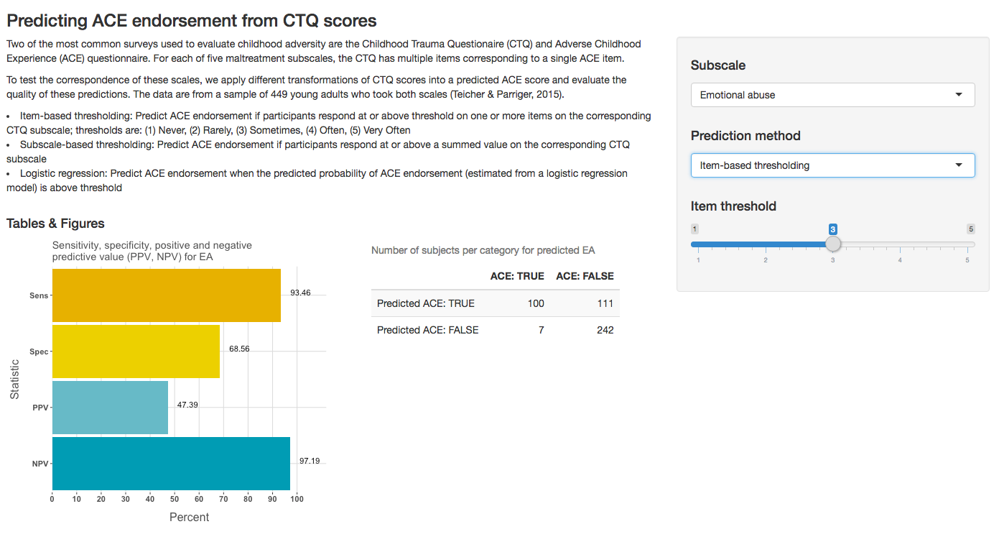

Translating between trauma questionnaires
R: Shiny App

Note: I hope to make public access to the app available as soon as possible! Currently the link is broken and will be instated pending approvals from those that generally shared the data, as well as the publisher.
Two of the most common surveys used to evaluate childhood adversity are the Childhood Trauma Questionaire (CTQ) and Adverse Childhood Experience (ACE) questionnaires. For each of five maltreatment subscales, the CTQ has multiple items corresponding to a single ACE item. We use different methods to predict ACE scores from the CTQ scores and evaluate the quality of these predictions.
While primarily for researchers that study childhood maltreatment, the interactive visualization of statistical concepts and receiver operating characteristic curves, might also be of interest to students in an introductory statistics course.
The data are from a sample of 462 young adults who took both scales. The dataset includes their scores on each of the CTQ and ACE items, as well as participant age, and this information was provided by Dr. Martin Teicher (dataset characteristics are available in Teicher & Parriger, 2015).
Here are some of my slides from a short presentation on this app.
The subscales on both the CTQ and ACES address emotional abuse, physical abuse, sexual abuse, emotional neglect, and physical neglect.
On the ACES, each subscale is assessed by a compound question. For example, the question about physical neglect is phrased as, “Did you often feel that you didn’t have enough to eat, had to wear dirty clothes, and had no one to protect you? -or- Your parents were too drunk or high to take care of you or take you to the doctor if you needed it?” (emphasis mine).
On the other hand, the CTQ asks about how often a specific exposure occurred, with the following responses options: (1) Never, (2) Rarely, (3) Sometimes, (4) Often, and (5) Very Often. For the same physical neglect subscale, the CTQ asks five questions.
1. I didn’t have enough to eat.
2. I knew that there was someone to take care of me and protect me. [reverse scored] 3. I had to wear dirty clothes.
4. My parents were too drunk or high to take care of the family.
5. There was someone to take me to the doctor if I needed it. [reverse scored]
The questions don’t align perfectly, and some of the CTQ items are reverse scored. But if participants were fairly logical and consistent responders, this would be a pretty good way to translate CTQ subscales into ACE scores.
Another option is to add up all of the CTQ items for a particular subscale– since there are always 5 questions, this is out of 25– and then see whether there’s a “tipping point” on the CTQ that translates into ACE endorsement. Here, we’d predict ACE endorsement if participants respond at or above a summed value on the corresponding CTQ subscale, and you can explore how different thresholds impact effectiveness.
This is a topic for a different post, but the OptimalCutpoints package in R can help you identify the best threshold based on different criteria– e.g., maximizing sensitivity and specificity.
It also seems reasonable that each of the items per CTQ subscale might be weighed differently in terms of predictive value. For example, maybe the CTQ item “My parents were too drunk or high to take care of the family” is a stronger predictor of ACE endorsement than the other items, and taking this into account might improve our prediction.
We fit a logistic regression model in which ACE endorsement is predicted by each of its five CTQ subscale items. Then, we use those weights to estimate the odds (transformed to probability) of each individual endorsing the ACE item corresponding to that subscale. In the app, you can explore how well the prediciton performs for different probability thresholds.
Graph of sensitivity, specificity, and positive/negative predictive values: Learn more about these ways of describing test accuracy here! Note that there are trade-offs in sensitivity/specificity and PPV/NPV across every thresholding method and value.
Table of participants per condition: Shows the raw number of participants that would demonstrate true positives, false positives, true negatives, and false negatives for each prediction method and threshold. The total number of participants changes slightly because of missing ACE responses (we used mean imputation within subscale to handle missing data in the CTQ).
Receiver operating characteristics: Shows the trade-offs between identifying true and false positives for the subscale thresholding method only. Learn more about this type of graph here.